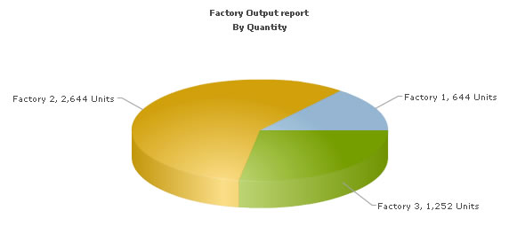

Using FusionCharts with PHP > Plotting data from a database |
In this section, we'll show you how to use FusionCharts and PHP to plot charts from data contained in a database. We'll create a pie chart to show "Production by Factory" using:
We've used MySQL database here. The database dump is present in Download Package > Code > PHP > DB folder. You can, however, use any database with FusionCharts including MS SQL, Oracle, Access etc. Before you go further with this page, we recommend you to please see the previous section "Basic Examples" as we start off from concepts explained in that page. The code examples contained in this page are present in Download Package > Code > PHP > DBExample folder. The MySQL database dump is present in Download Package > Code > PHP > DB. |
| Database Structure |
| Before we code the PHP pages to retrieve data, let's quickly have a look at the database structure. |
The database contains just 2 tables:
For demonstration, we've fed some dummy data in the database. Let's now shift our attention to the PHP page that will interact with the database, fetch data and then render a chart. |
| Building the PHP Page for dataXML Method |
| The PHP page for dataXML method example is named as BasicDBExample.php (in DBExample folder). It contains the following code: |
|
<?php |
The following actions are taking place in this code:
When you now run the code, you'll get an output as under: |
|  |
| Converting the example to use dataURL method |
Let's now convert this example to use dataURL method. As previously explained, in dataURL mode, you need two pages:
The pages in this example are contained in Download Package > Code > PHP > DB_dataURL folder. |
| Chart Container Page - Default.php |
| Default.php contains the following code to render the chart: |
|
//We've included ../Includes/FusionCharts.php, which contains functions //to help us easily embed the charts. include("../Includes/FusionCharts.php"); ?> <HTML> <HEAD> <TITLE> FusionCharts - dataURL and Database Example</TITLE> <SCRIPT LANGUAGE="Javascript" SRC="../../FusionCharts/FusionCharts.js"></SCRIPT> </HEAD> <BODY> <?php //In this example, we show how to connect FusionCharts to a database //using dataURL method. In our previous example, we've used dataXML method //where the XML is generated in the same page as chart. Here, the XML data //for the chart would be generated in PieData.php. //To illustrate how to pass additional data as querystring to dataURL, //we've added an animate property, which will be passed to PieData.php. //PieData.php would handle this animate property and then generate the //XML accordingly. //For the sake of ease, we've used an an MySQL databases containing two //tables. //Set DataURL with animation property to 1 //NOTE: It's necessary to encode the dataURL if you've added parameters to it $strDataURL = encodeDataURL("PieData.php?animate=1"); //Create the chart - Pie 3D Chart with dataURL as strDataURL echo renderChart("../../FusionCharts/Pie3D.swf", $strDataURL, "", "FactorySum", 600, 300, false, false); ?> </BODY> </HTML> |
In the above code, we're:
|
| Creating the data provider page PieData.php |
| PieData.php contains the following code to output XML Data: |
|
<?php |
In the above page:
When you view this page, you'll get the same output as before. |